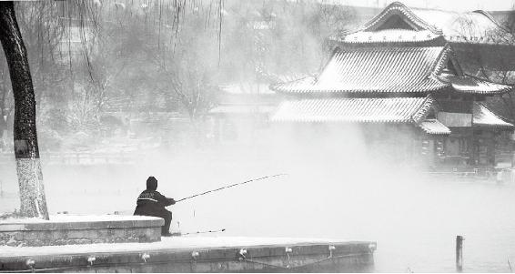
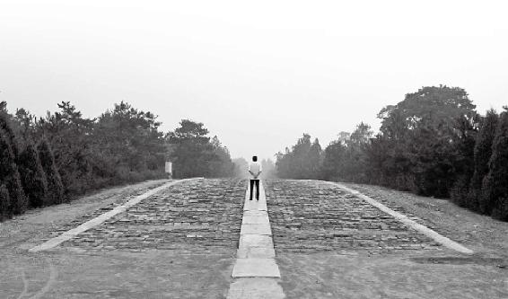
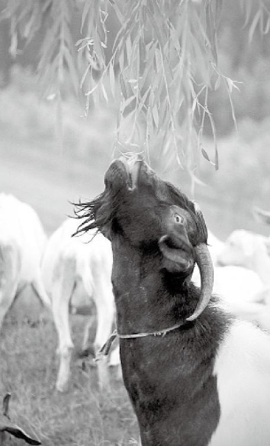
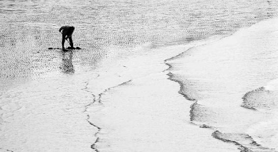

道家的成功叫返璞归真。它把那些苛罚自己、雕琢自己的东西都看得极为凶残，它以保存自己的纯真天性为追求目标。
道家是说，你要是老想去利用这种机巧、物质的东西，而不去发挥自己的本性的话，虽然貌似得到了成功，其实是大失败。
有一些人能活到一百岁，而且活得很好，而有些人却半百而衰，为什么？我妈妈是中医，她吃斋念佛有十多年了，她那天跟我说了一句话，“现在的人需要的不多，想要的多”。
经文：
昔在黄帝，生而神灵，弱而能言，幼而徇齐，长而敦敏，成而登天。乃问于天师曰：余闻上古之人，春秋皆度百岁，而动作不衰；今时之人，年半百而动作皆衰者，时世异耶？人将失之耶？岐伯对曰：上古之人，其知道者，法于阴阳，和于术数。
梁冬：中医是非常博大精深的，作为一门能够通晓宇宙道理的学问，过去这一两百年来可以说饱受诟病，很多人都不太理解。所以，我们特别希望能够用一种崭新的视角，用我们现代人都能理解的语言，重新去讲讲我们的中医。
尤其值得一提的是《黄帝内经》，它是一本足足可以让很多人一辈子都舍不得读完的书。
《黄帝内经》是一本足足可以让很多人一辈子都舍不得读完的书。
可能很多朋友在不同的地方都听说过这本书。但在我看来，讲《黄帝内经》讲得最有趣的人就是徐文兵老师。
徐文兵：过奖。
梁冬：徐老师，你一看就是贵人。以前都说“贱人多语，贵人沉默”。
徐文兵：不是，先得听你说，你抛砖我引玉。
《黄帝内经》分上、下两部，第一部叫《素问》，它有八十一篇，第二部叫《灵枢》，也有八十一篇，合起来一百六十二篇。
梁冬：《素问》和《灵枢》有什么讲究吗？
徐文兵：《素问》是简单的，互联网上有一个词叫FAQ，就是Frequently Asked Questions，意思是经常会被问到的一些问题。这种问题都带有普及性。
《素问》解答了中医对生命，对天、地与生命的关系的一些最基本问题，所以它是一本关于中医基础理论的书；《灵枢》是指人的气和人的神灵沟通的那个节点、关节点。枢是关键，就是我们开阖门的门轴，它一动整个门就动，所以《灵枢》是讲针灸穴位的书。
《素问》解答了中医对生命，对天、地与生命的关系的一些最基本问题。
梁冬：既然有《黄帝内经》，那是不是还有《黄帝外经》呢？
徐文兵：汉朝刘向整理的《汉书·艺文志》里面明确提到说《黄帝内经》是十八卷，《黄帝外经》有三十七卷，但是《黄帝外经》已经失传了。
梁冬：实在是太过可惜。因为据我所知，《黄帝内经》很多时候是讲道理、讲法则，而《黄帝外经》里可能还有很多的操作方法。
《黄帝外经》里可能有很多的操作方法。
徐文兵：关于《黄帝外经》的解释有很多种。古代道家写书，经常把两本书分成内篇和外篇，比如《庄子》有内、外篇，《抱朴子》也有。可能《黄帝内经》阐述了一些中医的理论，而《黄帝外经》阐述了另外一些，实际上也许都是理论。因为被称为“经”的东西，它指的是道路和方向，而不是“论”，也就是说不是技术层面上的东西。
被称为“经”的东西，它指的是道路和方向，而不是“论”，也就是说不是技术层面上的东西。
梁冬：有人说，《黄帝外经》里讲了不少外科手术方面的理论。
徐文兵：有这种说法。有人说，华佗的那些高超的外科技术，不是凭空掉下来的，也是师承了《黄帝内经》的内容。还有，中医现在用的整骨、整形法也是如此。像名动京城的那位双桥老太太—罗老太太，治病救人所用的都是祖传下来的整骨手法—其实也是《黄帝外经》的一部分内容。还有，华佗临死前写了一本叫《青囊经》的书，总结了他外科麻醉的药方等内容，想传给狱卒，结果那厮不接受，他只好“索火而烧之”；但还留下了如何给动物做手术的部分，比如人们给猪、鸡等动物做阉割手术的方法。现在看来，这种手术非常精巧，创口小，而且感染率低，愈合快。
实际上，中国的外科技术，在古代华佗那会儿就已经达到了很高的境界。
梁冬：中国古代在很长一段时间里，一些优秀的外科技术全都是从对动物的手术方法里移植过来的吗？
徐文兵：可以这么说。从对经络的认识来讲，中医说人有十二正经、奇经八脉，有三百六十个腧穴；另外古代那些很高明的巫师或者医师还观察到了动物也有经络、腧穴，比如说猪、狗等都有足三里穴。这些观察者都是高人，他们有望气的本领，扁鹊就是其中一人。《史记》记载，扁鹊学医学成以后能够“尽见五脏症结”，也就是说他有一种超人的感觉能力，凭这种感觉能力去扎针做手术，那水平就相当高。
现在还有人给树扎针灸呢，比如树生病了，在它的躯干和分支上不同的地方，给它扎上针，然后它的病就好了。
梁冬：就像现在拿小白鼠做实验，在其身上扎一下穴位，很多人觉得这简直太可笑了，其实从另外一个更高的程度上来说，不见得是错的。
徐文兵：对，万物有灵，万物有气。现在还有人给树扎针灸呢，比如树生病了，在它的躯干和分支上不同的地方，给它扎上针，然后它的病就好了。
梁冬：真是太神奇了，这也同样证明了中国古人早在几千年前就比现代的西方人有更强烈的环球意识。
不光所有的人是平等的，而且人、动物、植物，在某种程度上都是平等的，因为它们拥有同样的系统。
什么叫环球意识呢？不光所有的人是平等的，而且人、动物、植物，在某种程度上都是平等的，因为它们拥有同样的系统。
徐文兵：对！古代的人和天、地，和动物、植物都有沟通，它们有一种特殊的交流方式。这种交流方式叫“神通”，就是在神的层面上与它们沟通。
古代的人和天、地，和动物、植物都有沟通，它们有一种特殊的交流方式。
梁冬：这会不会太玄了一点？
徐文兵：是“玄”，我们今天谈的中医就离不开一个“玄”字。
梁冬：当时的古代人是怎么样和动物、植物沟通的呢？我们现代人经常说家里养条狗狗，时间长了之后你跟它是有默契的，你看一眼，它都知道你要什么。
徐文兵：这就是我们讲的在神的层次上沟通。眼睛是心灵的窗户，你看狗一眼，狗看你一眼，你和它的眼神就有一个交流，这绝对不是通过语言能达到的。

梁冬：假设我们现在这个录音棚外面有一只猫，我看它的时候它也在看我，那我就可能会想，我看它是一只猫，它看我成什么呢？
眼睛是心灵的窗户，你看狗一眼，狗看你一眼，你和它的眼神就有一个交流，这绝对不是通过语言能达到的。
徐文兵：是一堆肉。就所谓“子非我，安知我不知鱼之乐”，但是“他人有心”，我们可以“忖度之”。我们发自内心地去体会一下就能感觉到，这是种感觉，可能说不出来。黄帝和蚩尤大战的时候，其中黄帝取胜的一个关键原因，就是黄帝有一支特种部队—熊罴虎豹。其中，罴是一种大熊，是一种大狗熊。
黄帝能够驱动一支动物部队跟敌人作战，这说明他起码跟这些动物有不错的交流。
梁冬：是不是现在已经绝种了的一种动物？
徐文兵：很多动物现在都绝种了。
梁冬：对，就像以前有一种长着很长牙的那种大象嘛。
徐文兵：猛犸。
梁冬：对！
徐文兵：黄帝能够驱动这样一支动物部队跟敌人作战，这说明他起码跟这些动物有不错的交流。
梁冬：你说《封神演义》是编的呢，还是真有其人其事？
徐文兵：这个《封神演义》的书名有点错误，应该叫《封仙演义》。我们经常说神仙，其实，“神”不是“仙”，“神”是一种无形的存在，处在我们讲的那个“玄”的层次。而“仙”是人，具体的人。所以《封神演义》封的都是“仙”。它以道家的姜子牙姜尚（也是道家的鼻祖）等为封仙的主要人物，然后把这些具有某种特异功能的各色人等排了一下队。
《封神演义》的书名有点错误，应该叫《封仙演义》。
梁冬：现在一说到特异功能，大家可能都持怀疑态度，感觉是一个笑话。因为曾经一度，大家都觉得特异功能这种话是不能提的。
徐文兵：什么是特异功能？比如说品酒师，同样几杯酒往这儿一倒，一喝，这是哪年的，法国哪个庄园出产的葡萄酒，人家会明明白白地告诉你。咱们喝都傻喝，就觉得是酸也不酸、甜也不甜的东西。你说这是特异功能吗？
孔子评论易牙是一个好厨师，因为把两条河里边的水混在一块儿让易牙品，他能准确无误地告诉你哪杯水是哪条河的，这也是特异功能。
特异功能其实每个人都有，这是人的真性情，只不过在后天被蒙蔽掉了，但有些人还保存着。
我们现在都把特异功能神话了，好像是有点玄，不大存在，其实上面所讲的这些就是特异功能。古代人们认识中医的方法离不开某种与生俱来的功能，特异功能其实每个人都有，这是人的真性情，只不过在后天被蒙蔽掉了，但有些人还保存着。所以《黄帝内经》第一章就讲“上古天真论”，所谓天真，就是还没有来得及受污染、受蒙蔽的人的那种状态。
所谓天真，就是还没有来得及受污染、受蒙蔽的人的那种状态。
梁冬：咱们现在不是老说食物污染吗，所以要吃有机鸡蛋，有机蔬菜什么的，这样对吗？
徐文兵：现在讲的所谓有机的东西还是停留在物质层面上，“物质”就是唯物主义那个物质。而中医认识到的有机的概念要比它复杂得多。你说你吃的东西没受一点污染，没施过化肥，没这个没那个，但是，菜是在大棚里长的，它所得到的那个天地之气就不对，那都是邪气。
什么叫天地之气？春生、夏长、秋收、冬藏，这就是天地之气。你非要搭一个大棚，然后把那些菜种在里面，长出来的虽然还是那个形，还是那个样，但吃起来没那个味儿，这叫没有得天地之气。现在很多人吃东西还分析里面含多少什么氨基酸、脂肪，含这种那种矿物质。而中医看到的是更玄的东西，是它背后的能量。
春生、夏长、秋收、冬藏，这就是天地之气。
但是，你光有能量也不行，能量往哪个方向走也很重要。比如说你开个车，我开个车，咱俩都奔广东，你往北开，我往南开（这就是方向）。你虽然年轻，能量比我足，但你方向错了，你的神就乱了。所以中医讲的顺应天地之气，实际上说的是能量和方向这些东西。
现在很多人吃东西还分析里面含多少什么氨基酸、脂肪，含这种那种矿物质。而中医看到的是更玄的东西，是它背后的能量。
梁冬：在中国的所有医典里面，最重要的一本书是《黄帝内经》。它里面排在第一篇的文章，居然叫“上古天真论”。足可见，这个“上古天真论”有多么重要。
徐文兵：首先说“上古天真”的意思。一直以来，道家是讲究“道法自然”的，认为老天自然赋予你的能量或者能力是最高超的，所以自然的反义词就是“人为”，我们说做作，北京话叫“作”。这个人加上一个为，合起来一个字“伪”。
有人老说中医是伪科学，伪科学没错，中医就是伪科学，不是科学，但中医是另外一门认识自然的学问。
中医就是伪科学，不是科学，但中医是另外一门认识自然的学问。
梁冬：对，在到达真理的路途上有很多的路径，科学是其中一种。宗教、艺术、文学都是。同时，我觉得我们对于科学的这种界定不一样。可能从另外一个角度上来说，中医是另外一种广阔的科学，也说不一定。
徐文兵：不怕中医是伪科学，就怕科学是伪真理。当中医是伪科学，而科学又是伪真理的时候，我们是伪伪真理，正好负负为正，我们就是真理。
当中医是伪科学，而科学又是伪真理的时候，我们是伪伪真理，正好负负为正，我们就是真理。
我们说“天真”，天—自然赋予你的能力。在这种能力面前，你还是谦卑一些，不要把人为“作”出来的那种东西，凌驾于自然之上。
梁冬：不天真的男人就是“伪哥”。还有,你刚刚说到的天真就是那种率真的以及和天地一体的状态吗？
不要把人为“作”出来的那种东西，凌驾于自然之上。
徐文兵：就是不加任何雕饰、特别是人为粉饰雕琢的东西，另外，道家认为“今不如昔”，时代越进步，人为的东西越多、越高级，离天真越远。而追求这种天真的唯一办法不是在现在世界上去找，而是返璞归真，回到远古时代，这就是“上古”。那时候的人们是最接近自然、最天真的。
追求天真的唯一办法不是在现在世界上去找，而是返璞归真，回到远古时代，这就是“上古”。那时候的人们是最接近自然，最天真的。
梁冬：社会进步的另外一种表述，就是距离自然越来越远的一个过程。
徐文兵：对，人的本性越来越被压抑，越来越被伤害。
梁冬：套句时髦的词叫越来越“异化”。
徐文兵：异化的结果就是人活得越来越痛苦，越来越不自然。所以从第一篇“上古天真论”来讲，我们就得出这么一个结论，人想回归到自己自然纯朴的本性就要做两件事儿：一是尽可能地亲近自然；第二尽可能回归传统，或者叫亲近传统，回归自然。这就是“上古天真论”第一个教你要做的事儿。
人想回归到自己自然纯朴的本性就要做两件事儿：一是尽可能地亲近自然；第二尽可能回归传统，或者叫亲近传统，回归自然。这就是“上古天真论”第一个教你要做的事儿。
“昔在黄帝，生而神灵”
梁冬：接下来就是“昔在黄帝，生而神灵，弱而能言，幼而徇齐，长而敦敏，成而登天”，24个字就把黄帝的一辈子讲完了。
如果你想学习《黄帝内经》，就得去学古汉语，去理解古文中每个字的意思，这样你才能真正跟古人进行沟通。
徐文兵：对，把一生概括了。
梁冬：你说你怎么能够不觉得中国文化太美。
徐文兵：另外，关于我们如何用现代语言去诠释《黄帝内经》的问题，我个人认为诠释不了。如果你想学习《黄帝内经》，就得去学古汉语，去理解古文中每个字的意思，这样你才能真正跟古人进行沟通。假如你把这些东西翻译成大白话，就好像拿中国话来翻译外国诗，或者把中国诗翻译成外国话一样，没味，也没有神韵。
我们先讲“生而神灵”，意思是说这个人生下来就不一样。
我们中国人总是认为外来的和尚会念经，都是对外来的宗教顶礼膜拜，忘了我们自己也同样有这样伟大的人、这样伟大的学问，还有这样的使者带来上天的信息，同样在阐释、在告诉我们天地是怎么回事。这些人其中的一个就是黄帝。所谓“昔在黄帝，生而神灵”，是说他生下来就有与天地沟通的本领。
我们中国人总是认为外来的和尚会念经，都是对外来的宗教顶礼膜拜，忘了我们自己也同样有这样伟大的人、这样伟大的学问。
什么叫“神灵”？我们现在称呼什么为“神灵”？什么又叫“神”呢？
梁冬：我认为所谓的“神”就是所有有意识和无意识的东西的集合。
徐文兵：唯心的吗？
梁冬：也是唯物的。比如市场上所有人都作出了买股票和卖股票的决定，结果，你就看到股票的曲线有升有跌，就好像有人画出来一样，一会儿涨了一会儿又跌了。但是，这种曲线并不是某一个人画出来的，而是所有人根据自我独立判断而出来的，就如同有一个人在画。我认为，它其实是一个比喻，它实际上是把所有人的共同力叠加到一起并呈现出来的一个形象。这是我对“神”的理解。
股票的曲线并不是某一个人画出来的，而是所有人根据自我独立判断而出来的，就如同有一个人在画。
徐文兵：有这么一个故事，关于禅宗的，讲的是风动、幡动。两个小和尚看那个旗幡在飘，就展开了讨论，一个小和尚说：“哎，幡在动。”另外一个说：“不是幡在动，是风在动，是风吹幡动。”然后你是第三个小和尚，我问你：“谁让幡动？”
梁冬：心，对吧？
徐文兵：太远了，谁让风动？
梁冬：天地？
徐文兵：天还是地？
梁冬：天。
徐文兵：后来来了第三个小和尚，他说：“是地球自转产生了风。”又来了第四个小和尚，问：“谁让地球转？”
梁冬：太阳。
徐文兵：谁让太阳发光？
梁冬：不知道。
徐文兵：总有的吧？你得往上追呀！
梁冬：不知道。
徐文兵：银河，宇宙，再往根上倒，谁让宇宙动？
梁冬：那只能是霍金了。
徐文兵：最后和尚的老师就出来了，说：“心动。”什么叫“心”？
什么叫“心”？心就是神。
梁冬：心就是神。
徐文兵：对。在中国古代文化中，“心”和“神”是同义词。所以，我们说的这些物质，还有它的运动，推到它的基点、原点，就是“灵”。这个“灵”，我们给它取个名字，西方人叫“God”— “造物主”，我们叫“神”。你查一下《说文解字》，“神，引申万物者”。
中国原来就叫“神州”，是神眷顾的地方，中国人不是没娘的孩子，可是，现在我们都把神给忘了。
梁冬：所以它右边是一个“申”字。
徐文兵：对，天地万物都是从那儿过来的。或者你翻译成英文“who created everything”，造物主。很多人说我们中国人是无神论者，我说我们中国人是有神的。中国原来就叫“神州”，是神眷顾的地方，中国人不是没娘的孩子，可是，现在我们都把神给忘了。
梁冬：会记起来的。
徐文兵：神，是创造万物的。神是天，灵是人。你看“灵”的繁体字怎么写？靈！上面一个“雨”，中间三个“口”，底下一个“巫”。
这个“巫”，就是我们现在鄙视的“巫婆”“神汉”。“巫”其实是中国古代最高的智慧分子。
“巫”其实是中国古代最高的智慧分子。
梁冬：每一个民族都是这样的。
徐文兵：可没有一个民族像有些中国人一样把自己的最高智慧分子踩在脚底下，甚至一说起“巫”来都带一种恶毒、贬义的语气。
梁冬：那咱们说“灵”字。
徐文兵：一说“灵”就离不开“巫”啊！什么叫“巫”？“巫”的上边一横代表“天”，下边一横代表“地”，中间是沟通天地的。左边这人代表活人，右边那人代表死人，它是沟通天地人鬼的那个灵媒、媒介，这叫“巫”。
梁冬：然，然也。
徐文兵：再问一个问题，巫是男的？还是女的？
梁冬：巫应该是男的。
徐文兵：能够跟天地鬼神沟通的人，绝对不是人为意识很强的人，而是一个很感性的人，很有第六感的人。你想，这种功能是男人具备还是女人具备？
能够跟天地鬼神沟通的人，绝对不是人为意识很强的人，而是一个很感性的人，很有第六感的人。
梁冬：我以为是男人，因为“巫”字中间有一竖。
徐文兵：不是，真正的巫都是女的。男人后来慢慢也开始有了这种本事，男巫叫“觋”，所有的男巫都是跟女人学出来的，叫“巫觋”，先有巫后有觋。巫是有这种特殊本领的人。当一个巫，通过三个口念咒语去祈求下雨，而雨真正下来的时候，这个状态就叫“灵”，我们说：“哎呀，真灵！灵验！”
梁冬：用西方话叫“It works”。
徐文兵：对！
梁冬：我这样讲的原因是要告诉大家，徐老师不仅懂中医，而且很懂英文，是可以用英语向西方人讲中医的人。
徐文兵：“生而神灵”，就是说，黄帝一生下来，虽然是个男的，但是他有与天地鬼神沟通的本领。我们说小孩子生下来聪明不聪明，机灵不机灵，也有这里面的因素存在。但是，黄帝的聪明是大聪明，是“慧”，而不是“智”。
梁冬：“智”和“慧”有什么区别？
徐文兵：“智”和“慧”区别很大，不过现代人都不讲这个区别。我告诉你两个成语你就明白了。有句话叫“急中生智”，“慧”该怎么说？
梁冬：戒、定、慧。
徐文兵：“静极生慧”。我们说“急中生智”“静极生慧”，一个是着急上火时迸发出的灵感，一个是在极度安静无欲无求状态下迸发出来的东西，二者完全不一样。
“急中生智”“静极生慧”，一个是着急上火时迸发出的灵感，一个是在极度安静无欲无求状态下迸发出来的东西。
再深入一点来说，智不带“心”，它不动心、不动神。智就是“知日”，就是说它研究的是看得见、摸得着的东西。就像一个明晃晃的太阳挂在那儿，咱们都在讨论它，除非你是瞎子，否则只要是长了眼睛的人都能看见。所以，肉眼凡胎的人都可以讨论的学问叫“智”。
而那个“慧”，首先它带心，只要带心的东西都通“神”。而且，它上面是两个“丰”字，这意味着极大丰富、不可想象的内容，没有穷尽。“慧”中间的这个字就像回归的“归”字的右半边儿，象征着一种哲学；这“拐弯”的东西就像我们讲的乐极生悲，到时候就会拐弯儿的。
“慧”，首先它带心，只要带心的东西都通“神”。而且，它上面是两个“丰”字，这意味着极大丰富、不可想象的内容，没有穷尽。
所以，“慧”不是像研究“智”的学问那样，什么“1+1=2，2+2=4”，无穷无尽的。到了“慧”这境界，实际上就告诉你一个道理：多了不好，太强势了也不好，抱朴守拙倒是挺好。但你要从“智”的角度来看就觉得这人是个傻冒，若按“慧”来讲，哎，高人！这就是“智”和“慧”的区别。

静极生慧，只有在极度安静无欲无求状态下，才能迸发出“慧”的灵感。
“弱而能言”
梁冬：黄帝当年刚刚出生的时候就“生而神灵”，之后就“弱而能言”，什么叫“弱而能言”？
徐文兵：“弱而能言”里的这个“言”，不是随便胡说八道，也不是小孩子咿呀学语。我们做人，儒家讲应该立德、立言、立功，所谓三立。古人起名字，不是参照《道德经》就是四书五经。比如楚图南，图南就是鲲鹏。《庄子·逍遥游》第一篇说，北方有鲲，然后变成大鹏往南飞，是谓图南！
我们做人，儒家讲应该立德、立言、立功，所谓三立。
梁冬：那这个“弱而能言”到底是什么意思？
徐文兵：既然儒家把“立言”当成人生的一大任务，这个“言”就是能够出口成章，讲出一些非常经典的话来的意思。
梁冬：就是随口就能说出“三大纪律，八项注意”“打土豪，分田地”。
徐文兵：比那个要高。我们中医讲，古代很多书是不著文字而是口传心授的。这种口传心授出来的东西，都是现在《黄帝内经》中那些经典文字。“弱”，是说“弱冠”，指二十岁以前。也就是说黄帝在二十岁以前就已经能够出口成章，说出一些很经典的话来了，这叫“弱而能言”。
古代很多书是不著文字而是口传心授的。
“幼而徇齐”
梁冬：“弱而能言”后面一句是“幼而徇齐”。
徐文兵：古人有一句话叫“循规蹈矩”，还有一句叫“见贤思齐”，什么意思？你光“生而神灵”还不够，还需要什么？拜师学艺，所以“幼而徇齐”是说黄帝自幼跟了很多的名师，得到了他们的灌顶、提携、言传身教、耳提面命，这是讲他求学的一个过程。《黄帝内经》始终贯穿着“黄帝问于岐伯曰”，这岐伯就是天师—天子的老师，是黄帝的一个重要领路人。
梁冬：也就是说黄帝年轻时受到了太多高人齐心协力的提拔和教育，当然，他本身这个胚子质量也高，是吧？
徐文兵：有根基，否则磨砖成不了镜。你“生而神灵”，也可能就有点儿聪明，或者是有点儿特殊本领，但如果你再得到名师名家的指点，就能上更高的台阶了。
你“生而神灵”，也可能就有点儿聪明，或者是有点儿特殊本领，但如果你再得到名师名家的指点，就能上更高的台阶了。

天生有点聪明底子，也需要找到好的老师，得到他们的指点，方能如虎添翼。
“长而敦敏”
梁冬：接下来说“长而敦敏”。我特别喜欢这句话！我甚至想过，若是我以后有儿子，就叫“梁敦敏”，因为我觉着“敦敏”这两个字，实在是太优雅、太漂亮了。你想想看，如果有一个男孩子，长得憨憨厚厚的，但是内心又极其聪敏，那得多少人喜欢啊！
徐文兵：这个词是有大智慧的。但是一般人都不认识，什么叫“敦”？什么叫“敏”？
梁冬：我记得以前有一个人叫“夏侯惇”。
徐文兵：我们经常说一个词叫“胖墩”“门墩”，这个“敦”是指下盘特别稳的人。读《黄帝内经》的话，首先要懂得一些道家的功法，比如说站桩、静坐。道家站桩有一个基本的要求，叫“气沉丹田”“虚其心，实其腹”“离中虚，坎中满”。离是心，心火；坎是肾，就是我们讲的丹田那一块位置。而“站桩”是让人保持一个什么样的状态呢？下边很重，就像不倒翁似的，有深根。这时，丹田是实的，是充满的，而心胸是虚的—“虚其心”。
梁冬：应该是坎中满，离中虚，心中虚。
徐文兵：现在人肾是虚的，是坎中虚，把自己的肾精全流失掉了，搞得心火蒸腾得特别厉害、特别旺。所以真正养生的人是要“离中虚”，要保持虚心、实腹，肾精足。
现在人肾是虚的，是坎中虚，把自己的肾精全流失掉了，搞得心火蒸腾得特别厉害、特别旺。
“敦敏”是说心、肾的状态。“敦”是肾精很足，“敏”是指“心”虚时感觉就非常的敏锐。这种状态下容易出“慧”，这叫“长而敦敏”。
“敦”是肾精很足，“敏”是指“心”虚时感觉就非常的敏锐。这种状态下容易出“慧”。
梁冬：古人讲虚心，不仅仅是说我们平常要保持低调，还阐明虚心其实有很重要的物质基础、生理基础。
徐文兵：我始终认为，成佛也好、悟道也好、性高潮也好，都是有生理基础的。经络不通，生理基础不具备的话，那个状态就出不来。
成佛也好、悟道也好、性高潮也好，都是有生理基础的。
梁冬：从中医的角度讲，虚心是指什么？
徐文兵：中医讲的虚心，是指心不被蒙蔽。有种病态叫痰迷心窍。
梁冬：有些女同学总是批评她老公，叫作“猪油蒙了心”。
徐文兵：或者叫“精虫上脑”，这都是心不虚了。
梁冬：心不虚，它的物质基础是不是说心上真的蒙上了什么东西？心肌梗塞，就是不虚心吗？
徐文兵：对呀，那就是实住了。脑梗、脑萎缩、心肌梗塞，都是不虚心的表现。包括抑郁症，它不仅仅是有淤血，而且还寒心，心寒齿冷。心本身是火，却被冰冻了。
脑梗、脑萎缩、心肌梗塞，都是不虚心的表现。
梁冬：就是说，心的血气不足，温度不够。
徐文兵：除了温度不够、气血不足以外，还有邪气进来，所以这些人要自残自杀。
梁冬：邪气这个事情，可以足足讲上两天，咱们现在先不讲“邪”“正”这两个字。“长而敦敏”是说“虚其心，实其腹”。现代人是虚其腹、实其心，猪油蒙了心。所以我们常常看到一些人满脸的暗疮，那其实不是真正意义上的上火，用中医的话来说，是虚火上扬，实际上火都在上面，下面都没有了。所以好的中医治疗暗疮都不用寒凉的药，而是用热药，这是大智慧。
好的中医治疗暗疮都不用寒凉的药，而是用热药，这是大智慧。
徐文兵：你已经比很多中医高明多了。
梁冬：失敬失敬。“长而敦敏”太有意思了，两个字就讲出了从虚心到实腹，甚至猪油蒙心的内容。
“成而登天”
梁冬：最后一句话说的是黄帝“成而登天”。
徐文兵：“成而登天”讲的是：黄帝在统一天下以后，来到山上修行，后来天上下来一条龙，把他带到天宫去了。还有一帮跟他一起修炼的人攀龙附凤，扯着龙尾巴、龙鳞角也走了。
梁冬：这是一种比喻或是寓言吧？
徐文兵：这是道家修行的一个境界。《黄帝内经》也讲了，道家修炼有四个境界，叫“真、至、圣、贤”。我们经常说的圣人，好像高得不得了，在道家里其实排名第三，算不上什么。道家真正的最高境界叫真人。这种真人，能游行于天地之间，视听于八达之外。
道家真正的最高境界叫真人。这种真人，能游行于天地之间，视听于八达之外。
孔子是圣人，他的弟子叫七十二贤人。儒家的鼻祖孔子在道家看来，也只是一个圣人，是生活在世俗中的一位境界比较高的人。道家讲的真人是孙思邈—孙真人，还有那个丘处机—丘真人，北京白云观就是丘处机那会儿建起来的。
孔子是圣人，他的弟子叫七十二贤人。
梁冬：很多人对丘处机的理解是从《射雕英雄传》来的，但实际上真人在中国古代是一个非常高的境界。
徐文兵：黄帝修到了这个境界，叫“成而登天”，登天是到了真人的境界。
梁冬：我还以为成功人士就是当老板了，登天嘛，天子。
徐文兵：天子还是个人，修到真人就可以魂魄离体，游行于天地之间，在时空中穿梭。
梁冬：“昔在黄帝，生而神灵，弱而能言，幼而循齐，长而敦敏，成而登天”，24个字讲了黄帝的一生。相信朋友们从这24个字里面看到了一个事业成功人士的一辈子。以前的成功是你真正地明白了世界真理的成功，现代的成功境界低很多啊！充其量就是有一点钱而已，有一点合法的钱就算是成功人士。
以前的成功是你真正地明白了世界真理的成功，现代的成功境界低很多啊！充其量就是有一点钱而已，有一点合法的钱就算是成功人士。
徐文兵：对，每个人对成功的理解不一样。道家的成功叫返璞归真。它把那些苛罚自己、雕琢自己的东西都看得极为凶残，它以保存自己的纯真天性为追求目标。
实际上，《庄子》整本书都讲的是道家挤兑儒家的事情。孔子的学生看见一个老头抱着一桶水浇地，就问他：“你怎么不弄个水车呢？水车又省劲，效果又好。”结果人家说：“你是孔子的学生吧？”意思是说你动了这种机巧之心，就失去了纯朴天然的本性，耍的是小聪明。所以，道家反对这种“奇技淫巧”，反对花哨人为的东西。
道家的成功叫返璞归真。它把那些苛罚自己、雕琢自己的东西都看得极为凶残，它以保存自己的纯真天性为追求目标。
你看我们小时候学《劝学篇》，荀子是孔子孙子的学生，他讲的也是儒家的那一套。他讲什么呢？“假舟楫者，非能水也，而绝江河”，是说能划船的人善于利用船，学会这个技巧后，虽然不会游泳，却可以航行很远，这是儒家的思想。道家是说，你要是老想去利用这种机巧、物质的东西，而不去发挥自己的本性的话，虽然貌似得到了成功，其实是大失败。
道家是说，你要是老想去利用这种机巧、物质的东西，而不去发挥自己的本性的话，虽然貌似得到了成功，其实是大失败。
讲到养生，有一些人能活到一百岁，而且活得很好，而有些人却半百而衰，为什么？我妈妈是中医，她吃斋念佛有十多年了，她那天跟我说了一句话，“现在的人需要的不多，想要的多”。
梁冬：您妈妈不小心接触出到了一个很重要的东西。
徐文兵：不小心提出了一个很重要的问题。
梁冬：有一个很有名的营销学大师叫菲利普·克特勒，学营销、广告的人大多读过他的书，他说，大部分商品营销要做什么呢？就是要去把需求转换成欲求。比如现在，很多有手机的人不需要换新的。
徐文兵：煽动他们购买的欲望。
梁冬：对，本来大家不需要一部新手机，你忽悠他买，就是卖拐嘛。从这句话里你会发现，整个中国的传统文化和现代文明发展出来的逻辑体系，有极大的需要互相兼容的部分，说白了，就是有极大的矛盾部分。
徐文兵：所以，如果你想健康养生，就要识别出谁在煽你的情，谁让你欲火焚身。很多人在大病快死，或者锒铛入狱的时候，才知道自己追求的东西是那么奇怪、那么不切实际，才终于明白自己当时热血沸腾地追求那些东西，其实是一种病态。
很多人在大病快死，或者锒铛入狱的时候，才知道自己追求的东西是那么奇怪，那么不切实际，才终于明白自己当时热血沸腾地追求那些东西，其实是一种病态。
梁冬：我在十年前采访过当时红遍两岸三地的四个广告人，当时我问了一个问题，“作为一个广告人，你们忽悠人家买了那么多不需要的东西，不会忏悔吗？”这四位都差不多三四十岁，是伟大的广告界老兵，他们竟然异口同声地告诉我：“会！”事实上他们觉得这辈子做的最错误的事就是制造了太多没有必要的欲望，纯粹是因为客户需要做的。
很多人都会在一切来不及的时候，才明白曾经的追求是多么的无意义。走得太远，忘了当初如何出发。
“春秋皆度百岁，而动作不衰”
梁冬：接下来是“乃问于天师曰，余闻上古之人，春秋皆度百岁而动作不衰”。什么叫做“动作不衰”？
徐文兵：这是离我们约四千五百年的黄帝在问他的老师上古之人度百岁而“动作不衰”的原因。其实，这个“上古”就是我们现在说的三黄五帝时期的开始—伏羲、女娲的时代。
梁冬：六七千年前？
徐文兵：不止，比这还早。按南怀瑾先生的解释，中国的文化从盘古开天地开始，那是很久远的。我们现在都学西方的历史，知道考古必须拿出实证来。所以他说这个“上古”就是我们道家理想的最自然纯朴的生活状态时间段，那种状态是什么呢？你想想，人能够在地球上生存靠的是什么？我们既没有虎豹的爪牙之利，也没有兔子、羊、鹿的奔跑之快。
“上古”就是我们道家理想的最自然纯朴的生活状态时间段。
梁冬：更没有蟑螂的繁殖能力。
徐文兵：人靠什么能生存下来？凭什么你就成了万物之灵？在发明武器弓箭弹药之前，人靠什么生存？
梁冬：这问题问得太深了，您直接说吧。
徐文兵：靠的就是 “生而神灵”，人本来有一种与天地沟通的本领，有一种对将来灾害的预知能力，这是通神的。人得天地之全气，所以通神通灵，动物草木得天地之偏气，因而它们部分通灵。在母系社会女性领导天下的时候，人是靠体力干活的，是不是？那时需要狩猎、耕种，按理说应该选一个膀大腰圆，肌肉发达的男人当头啊，为什么选一个女人呢？
人本来有一种与天地沟通的本领，有一种对将来灾害的预知能力，这是通神的。
因为领导这个氏族部落的人，应该是一个能与天地沟通的人。比如说，汶川要地震了，这个女巫就说：“咱们走吧，离开这儿！”她有这种能力，而其他的动物没有。
黄帝都已经“生而神灵”了，但在一些问题上还怀着无比钦敬的心情问他的老师岐伯。岐伯，我考证他应该是现在巫山西陵峡一带一个部落的大巫师。而黄帝后来娶了嫘祖， 四川人，就是养蚕的那个鼻祖，他们的部落通婚合并以后，黄帝就把大巫师岐伯请到中原做了他的老师。我们可以到巫峡去看看，那儿还有古代的观星台。为什么叫巫山、巫峡？因为那儿是古代大巫聚集的地方。
为什么叫巫山、巫峡？因为那儿是古代大巫聚集的地方。
他对他的天师说：“余闻上古之人，春秋皆度百岁，而动作不衰。”也就是说，上古那个年代，人活到一百岁了动作还没有衰退，这是什么原因呢？这里，我先讲一下“动”和“作”的意思。“动”的繁体字“動”：左边是一个重力的“重”，右边是一个“发力”的“力”，其实和我们的脚后跟有关系，我们管脚后跟叫“踵”。
梁冬：摩肩接踵。
徐文兵：道家叫“踵息”，脚后跟还会呼吸。所谓“动”是指脚后跟发力。所谓“作”，一个单立人加一个“乍”，意为动手，人的五指乍开。
所谓“动”是指脚后跟发力。所谓“作”，一个单立人加一个“乍”，意为动手，人的五指乍开。
梁冬：那“动手动脚”的意思是什么？
徐文兵：动手叫“作”，动脚叫“动”，合起来叫“动作”。
有一句话叫“人老先老腿”。为什么？就是人气血不够了，但为了心脑脏腑的需要，就首先牺牲它的末梢，因而腿脚就开始不灵便了，手也不灵巧了。可是上古之人活到一百岁，腿脚、手没有一点儿衰弱的迹象，这就叫“动作不衰”。
人气血不够了，但为了心脑脏腑的需要，就首先牺牲它的末梢，因而腿脚就开始不灵便了，手也不灵巧了。
梁冬：你看很多身体不好的人，比如说糖尿病人，他们可能最开始受伤的是脚。
徐文兵：蜥蜴遇到危险的时候，尾巴“啪”一下断了。气血不足的人，需要保全自己的时候，就得先牺牲自己的肢体。
气血不足的人，需要保全自己的时候，就得先牺牲自己的肢体。
梁冬：现代西方人在健身房里健身其实很蠢，他们都是锻炼四肢，不锻炼内脏的。
现代西方人在健身房里健身其实很蠢，他们都是锻炼四肢，不锻炼内脏的。
徐文兵：他们在健体，美其名曰“健身”。
梁冬：体和身又不一样？
徐文兵：不一样，身是身躯躯干，体是四肢。所以“动作不衰”指的是他们的手和腿脚都很灵便，其原因在于他的身躯是健康、气血充足的。
梁冬：黄帝还说：“今时之人，年半百而动作皆衰者，时世异耶？人将失之耶？”
徐文兵：这句话意思是说，他那个年代的人，年半百，动作皆衰，走不动路，迈不开腿了，手也捏不了精细的东西，这是时代变化造成的呢，还是人失之耶？失之的是什么？是道，是指人违背了自然变化的规律，还是人没有掌握自然变化的规律呢？这是黄帝的问题。显然他已经知道，肯定是人违背了规律的原因。
梁冬：咱们小时候，学语文修辞都讲究提问、设问、反问，这是典型的设问句，诱供。
徐文兵：黄帝其实是希望老师岐伯能详细地给他讲解一下，虽然他自己已经意识到，肯定是人做的不对劲了。
梁冬：根据黄帝的提问，岐伯就回答说，“上古之人，其知道者，法于阴阳，和于术数。”这个“知”和“道”，是动宾词组，不仅是说“I know”，而是“I know what it is”。
徐文兵：I know the way。所谓道，简单地说它就是自然变化的规律。而我们得顺着它走，因为自然界变化的规律是不以我们的意志为转移的。可是，我们现在人都是一拍脑门按照自己的臆想妄想去做，这想象恰恰是逆天道行的。所以，上古那些遵循天地自然变化规律的人，首先他得知“道”。第二，知“道”后他怎么去做呢？“法于阴阳，和于术数”。
所谓道，简单地说它就是自然变化的规律。而我们得顺着它走，因为自然界变化的规律是不以我们的意志为转移的。
梁冬：“法”，为什么是三点水一个去呢？
徐文兵：从道家传承来讲，我们强调四个字，道、法、术、器。道是天道，法是人定的，主要看你怎么跟着天道去做。世间有善法，有恶法，你违背天道的那个法就是恶法。术是技术层面上的操作，器是指有形的物质或者工具。工欲善其事，必先利其器。比如说，我们要去广州，开车去，你开奥迪，我开奥拓。这是什么层面上的的差别？道、法、术、器？
道是天道，法是人定的，主要看你怎么跟着天道去做。世间有善法，有恶法，你违背天道的那个法就是恶法。
梁冬：属于器的差别。
徐文兵：梁冬开奥迪，徐文兵开奥拓，谁先到广州？
术是技术层面上的操作，器是指有形的物质或者工具。
梁冬：那应该是奥迪吧？
徐文兵：不一定。
梁冬：对，得看方向。
徐文兵：就好像咱们当年跟日本鬼子、国民党打仗一样。人家全副美械，我们小米加步枪，谁赢？不在器上，有比器更重要的事情，也就是第二层次—术。你开奥迪，但你是个新手，驾驶技术极次；我开奥拓，可我是老司机，我不往沟里开，谁先到？
梁冬：奥拓。
徐文兵：对，奥拓可能就先到了。但是问题又来了，假如梁冬开个奥迪，驾驶技术比我好，我开的是奥拓，驾驶技术很烂，谁先到？
梁冬：那肯定是我了。
徐文兵：还不一定。这就是第三个层面—法，就是你取的方法。比如说，我们开的车本来就是用来走路的，你非要在水上走。或者你开着很好的车，驾驶技术也很好，但走的是国道、二级公路，而我走的是高速公路，我们所取的法也不同，那谁先到？话又说回来了，你开着奥迪，驾驶技术也很好，还上着高速公路，你一定先到吗？
梁冬：那也不一定，这次我学精了。
徐文兵：最后一个更重要的问题，最关键的是“道”。知道有个成语叫“南辕北辙”吗？你老人家开的是奥迪，驾驶技术也好，走的又是高速公路，可是你往莫斯科那个方向开了，咱俩谁先到广州？我开个奥拓，技术烂，走的是羊肠小道，可是我的方向是对的。那答案就很明显了。我们现在人关注的都是些物质技术条件上的事情，没人关心道，没人关心那个大方向。
我们现在人关注的都是些物质技术条件上的事情，没人关心道，没人关心那个大方向。
梁冬：这就是为什么巴菲特炒股能够赚到钱的原因，他从来不看技术层面。
徐文兵：这就是中医养生为什么好的原因，它可能技术含量很低，高精科技层次不高，但是它方向是对的。我们现在很多人开着奔驰往沟里走，技术越高，结果离健康的方向越远。所以，我看到很多人朝着错误的方向孜孜以求，心里面觉得很遗憾。
中医可能技术含量很低，高精科技层次不高，但是它方向是对的。
梁冬：没事偷着乐。
徐文兵：我干嘛乐，我要是乐就是一种病态。我不过对此产生了一种悲悯之心。
“法于阴阳，和于术数”
徐文兵：当我们说“道”很玄很虚空的时候，岐伯老师就说了，你可以取法阴阳。阴阳的变化是看得见的。什么叫阴阳？简单来讲，昼夜就是阴阳，白天是阳，晚上是阴。男女是阴阳，四季是阴阳。
梁冬：头尾是阴阳。
徐文兵：如果你想法于阴阳，却不知道怎么做的话，你可以跟着老天给你的这些明示的现象去做，日出而作，日落而息，对不对？我们现在是怎么做的呢？逆于阴阳，白天睡觉，晚上工作。
如果你想法于阴阳，却不知道怎么做的话，你可以跟着老天给你的这些明示的现象去做，日出而作，日落而息。
梁冬：而且，现在很多人晚上去洗桑拿，按道理说，晚上应该收敛，因为你所有的神经细胞、气血都是收敛的。
徐文兵：晚上打游戏、泡吧。
梁冬：这都是不法于阴阳的做法，都是属于绝对的不法分子。
徐文兵：对待四季我们也要“法于阴阳”。《黄帝内经》第二章讲“四气调神大论”，讲到春生、夏长、秋收、冬藏，就是告诉人应该怎样顺着天地四季的变化去调养自己的身体。到冬天我们本来应该收敛闭藏，但好多人却喜欢冬泳，说是与天斗、与地斗。
梁冬：但是据我所知，好多搞冬泳的人还活得挺长的。
徐文兵：你这是光看贼吃饭，不看贼挨打；光看贪官的耀武扬威、荣华富贵，没看他背后受的那些罪。你知道有多少人因为冬泳死掉吗？你知道有多少人学冬泳以后病得很惨吗？这些人都不敢上电视对着镜头说“我多年不感冒了”，他们都是被违反自然规律的行为伤害了。
很多人都是光看贼吃饭，不看贼挨打；光看贪官的耀武扬威、荣华富贵，没看他背后受的那些罪。
梁冬：作为一位医生，您在这些方面很有权威性，毕竟您看过不少这样的病人。
徐文兵：冬天也有常青的树—松柏，你要搞清楚自己是不是松柏后，再决定是否去冬泳。如果不是松柏，你还是好好地披着棉猴儿悠着点。其实，这些“法于阴阳”说起来很玄，但确实很简单。我们经常说“祝你好运”，你顺应天地运势的变化走，当然就能交好运，你非跟它戗着来就要倒霉，就要走背运。
我们经常说“祝你好运”，你顺应天地运势的变化走，当然就能交好运，你非跟它戗着来就要倒霉，就要走背运。
梁冬：就像现在的股市，明明大势在跌，有的人总想抄底，老觉得自己能抄上，结果全被套牢！以为3000点是底了吧，抄一下，2500点才是底了吧！无穷无尽！
徐文兵：最高境界是不炒股。你这么抄与不抄都是在做错事。
最高境界是不炒股。
梁冬：今天我成功拒绝了一个让我去开户的朋友。他告诉我现在底已经很低了，不可能再低了，国家要救市了。你看美国救市，越救越不灵，之前7000亿的时候反应很强烈，等到8000亿的救市方案出台的时候，市场反而没感觉了。所以说古代的人，是很聪明的人，“其知道者，法于阴阳，和于术数”。
徐文兵：术，是一种预测未来的本事，通过打卦、计算，去预测一些适合或不适合做的事情。比如说，中医把数字分为阴阳，奇数为阳，偶数为阴。
术，是一种预测未来的本事，通过打卦、计算，去预测一些适合或不适合做的事情。
另外，你把这个一个点、三个点、五个点摆开以后，它是一个锐角。三是进攻性的方阵，若是把四或者八摆那儿，四平八稳，是防御型的。所以这就分成阴阳。天地变化的阴阳你是可见的，这些数字变化的阴阳却不可见。你要是阳气特别旺，就选个阴数，这叫和。阳气不足呢，就选个阳数，这叫“和于术数”。
梁冬：如果我最近阳气不足了，我就选一个1391391391的手机号码。
徐文兵：你看现在不少人都爱选8，广东人说“8”是“发”，我告诉你，8是个很阴的数，一般人镇不住，你看“八”的繁体字怎么写？
梁冬：捌，一个“扌”，一个“别”。
徐文兵：分手，拜拜。所以八是个分手数，很多人选了很多的八，结果妻离子散，原因就在于选的数不对。
八是个分手数，很多人选了很多的八，结果妻离子散，原因就在于选的数不对。
包括“九”，它是阳气极旺的一个数，古代只有皇帝能用，一般人不能用。
“和于术数”是什么意思？就是你通过这种计算把万物归为阴阳之后，去调和它。如果自己的气势镇不住，有些数字你就要慎选。所以，我建议，普通人选3、4、5就挺好，那些极阴极阳的数都不要选。如果你具有雄才大略，能做大事，你就去选这些数。
如果自己的气势镇不住，有些数字你就要慎选。
梁冬：赶明儿选一个手机号，133……联通。
普通人选3、4、5就挺好，那些极阴极阳的数都不要选。
徐文兵：3、4、5适合普通百姓，可是很多人就讨厌这个4。
梁冬：4是一个什么样的数字？
徐文兵：四平八稳，4是一个坚定的防御数，比较稳。另外，这个“术”，古代是指职业，意味着你选择什么样的职业谋生。孟子说过一句话叫“术不可不慎”，就是说，选择职业一定要慎重。为什么呢？因为职业对一个人身心健康的影响特别大。
梁冬：我爸就说过“男怕入错行，女怕嫁错郎”。
选择职业一定要慎重。因为职业对一个人身心健康的影响特别大。
徐文兵：我们在中学学过方苞的《狱中杂记》，他写那个狱吏的黑暗，对人性的摧残，最后他想起孟子说的这句话来。其实，孟子这句话的原意是这么说的，他说“矢人唯恐不伤人，函人唯恐伤人”。
就是说，做弓箭的人，他整天想着要把箭头磨得特别尖，生怕这个箭做得不好，不能把人杀死，所以他整天想的都是害人；可是那个做盾牌、盔甲的人，整天就想怎么把盔甲做得特别厚，把人保护得特别好，这种职业就给他造就出一种慈爱关爱之心。所以，你选择不同的职业，结果也完全不一样。
梁冬：人性都不一样了。
徐文兵：后来他讲“巫匠亦然”。“巫”指医生，他们生怕自己技术不好，不能把人抢救过来；可那些做棺材的“匠”呢，却整天盼着，怎么还不死人？多死几个人我多卖些棺材。所以你看，一个发的是慈悲心，一个是发的什么？恶毒之心。
古代人分职业不像我们现在，谁挣得多，谁就红。是看谁做的职业契合人心，说的话、做的事不违心，这个职业就最高级。
这种“术”对人的身心、人的本性影响太大了，所以我们要“和于术数”，慎重地选择职业。古代为什么把人的职业分成九流？上九流、中九流、下九流。他分职业不像我们现在，谁挣得多，谁就红。他是怎么分的呢？是看谁做的职业契合人心，说的话、做的事不违心，这个职业就最高级。一定要根据自己的本性去选择职业，否则的话，你会活得很惨。
一定要根据自己的本性去选择职业，否则的话，你会活得很惨。

你每天都要做的事情，直接影响到你的身心健康。充满慈爱的工作，会滋润你的心田；戾气十足的工作，只会让你的身心都逐渐干涸。